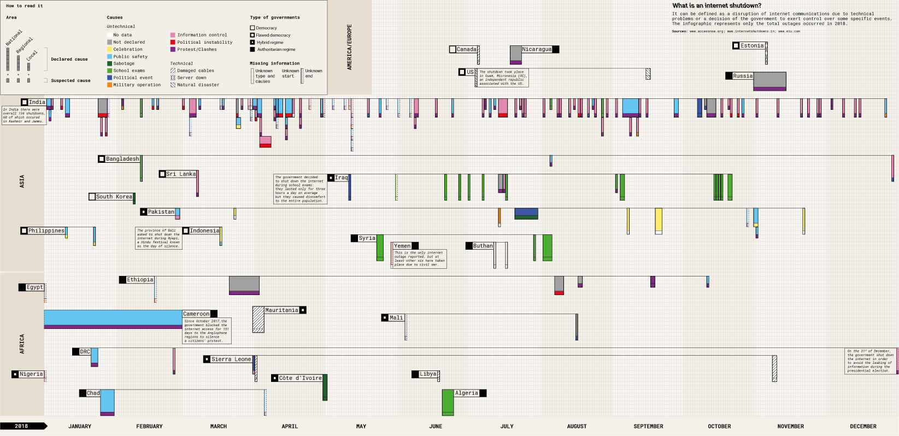
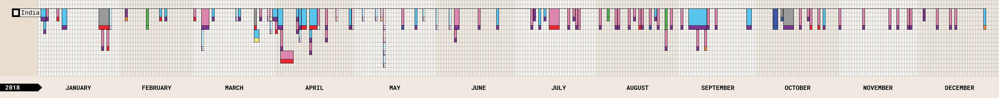
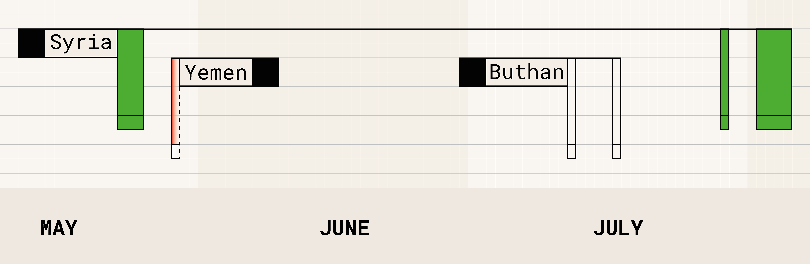
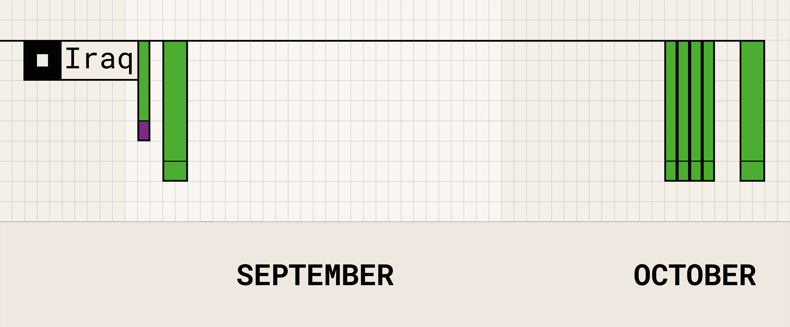

An internet shutdown is a disruption of internet communications caused by technical problems or, more often, a government decision to exert control over some specific events. The infographic only shows the total outages that occurred in 2018: a total internet shutdown occurs when all internet services are completely blocked, including broadband carriers and mobile data services. The aim of the visualization is showing the quantity, the duration, the geographical distribution and the causes, both suspected and declared, of internet shutdowns. One fact stands out from the infographic: governments order most of the shutdowns; for this reason, the visualization presents a deeper level of reading to link the internet shutdowns to the level of democracy of each country. The missing countries didn't have any internet shutdown or didn't release any data about it.
0Research questions
- How many shutdowns happened in 2018?
- How long are they?
- How are they distributed by country?
- Which are the causes?
- Is there a relation between shutdowns and level of democracy?
1Recurrent disruptions
Even if India is a flawed democracy, it is the country with the higher number of internet shutdowns in 2018, reaching a total of 134. The outages are all regional, local and short term, and the suspected and declared causes are almost always different.
India is a fragmented country that is divided into many states, union territories, divisions and districts; therefore, many internet shutdowns take place on the same day because they are located in different areas, some of which are more affected than the others; for instance, the state of Kashmir and Jammu alone counts 60 registered internet shutdowns out of a total of 134.

Focus on the situation in India.
2Blurred information
While in India, a flawed democracy, there are many regional, local and short term internet shutdowns, the outages in countries governed by authoritarian regimes are more frequently national, like in Syria. Furthermore, in these type of governments, data are often missing; for instance, in Yemen, there are 7 internet shutdowns in 2018, but there is information only about one of them due to the civil war. Moreover, the single internet shutdown in Yemen displayed in the infographic misses some important information (duration and suspected cause). Regarding Bhutan, the causes of the two total outages are missing: it is impossible to determine if they are technical or not, and both the suspected and the declared causes.

Focus on authoritarian regime.
3Five months of shutdown
Authoritarian regimes sometimes order total internet shutdowns that last for a long time. Cameroon is a good example of this habit; in fact, there is only one internet shutdown in 2018 that is important to highlight because of its duration: it is regional and lasts for 151 days, beginning on the 1st of October 2017 and ending on the 28th of February 2018. Cameroon is fragmented between Anglophone and Francophone regions. In 2017, people from the anglophone areas decided to protest against linguistic, political and economic discrimination; this protest led to an internet shutdown decided by the Francophone-dominated government to avoid dissent and calls for secession.

Focus on the longest shutdown of 2018.
4An emerging trend
In many countries, governments decide to shut down the internet during school exams for just a few hours a day. The main reason is to avoid cheating from the students, but these outages cause discomfort to the entire population. In Iraq, the government often orders this type of shutdown, but, in one case registered at the beginning of September, it uses the excuse of school exams to cover a protest.

Focus on internet shutdowns during school exams
5Infographic evolution step by step
The infographic was designed through various steps, starting from a grid that was specifically created to visualize all the data in the best way. This grid served as a basis for the arrangement of the different modules that represent each shutdown. The y-axis is divided by continent, leaving some information, such as the type of the government, inside the visualization to allow the readers to better view and compare all the information. Instead, the x-axis is divided by days and months to arrange the shutdowns on the grid and to guide the reading. Because of the high number of information, different visual variables were used to facilitate their recognition.

Some drafts of the infographic.
6Dataset
Title of dataset
Internet shutdowns
Sources
Download